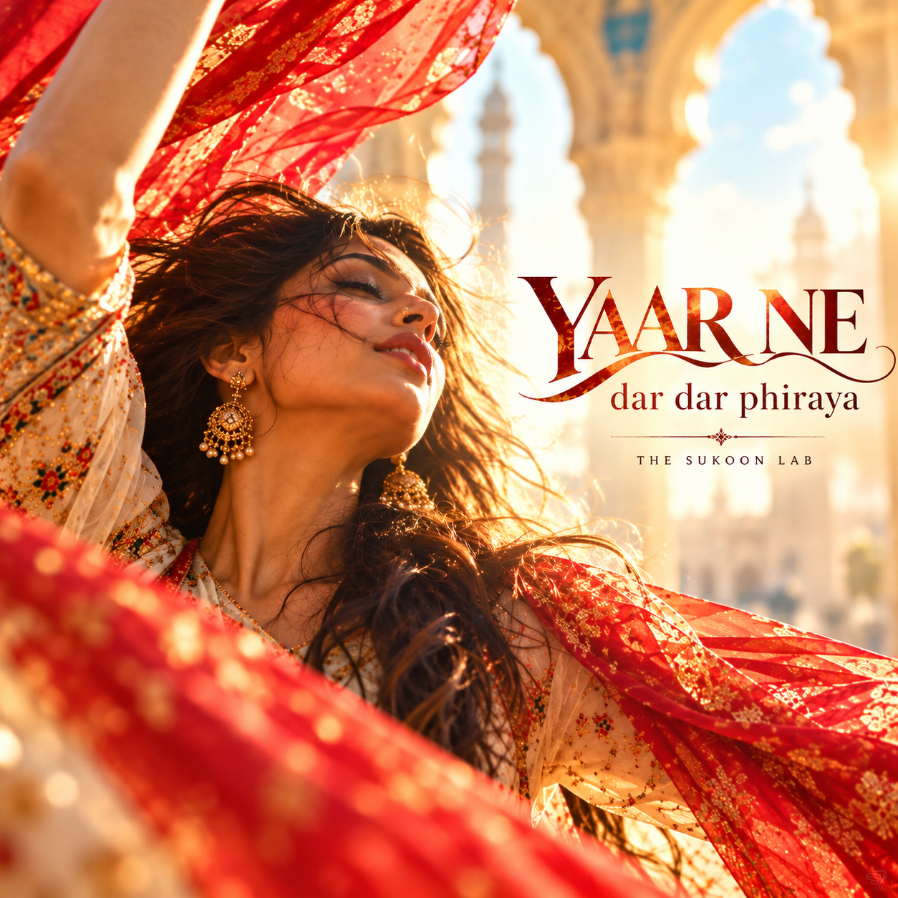

THE POET · THE SUFI
Shah Niyaz Barelvi
1742 – 1834
A longing that turns
towards the eternal.

RELEASE ARTWORK · NOT A VERIFIED PORTRAITTHE POET
A language of
surrender.
Shah Niyaz Barelvi is associated with the devotional currents of Sufi poetry, where longing becomes a path towards the beloved and the boundaries between earthly and spiritual love soften.
The enduring power of this tradition lies in its emotional directness: the search, the ache and the hope of being drawn beyond the self.
Hear the Sukoon Lab interpretations → SHRINE ASSOCIATED WITH THE POETShrine photo: Aal-e-Qutub ↗
SHRINE ASSOCIATED WITH THE POETShrine photo: Aal-e-Qutub ↗❧
Some words cross generations because they still know how we feel.
THE SUKOON LAB · POETRY IN SOUNDSUKOON LAB RELEASES
Barelvi, reimagined.
Every catalogue release currently credited to Shah Niyaz Barelvi, with available streaming links.
Loading releases…
MORE TO EXPLORE
 Mirza GhalibLonging and wit · 6 songs
Mirza GhalibLonging and wit · 6 songs Jigar MoradabadiPassion and ache · 4 songs
Jigar MoradabadiPassion and ache · 4 songs Jaun EliaRebellion and introspection · 3 songs
Jaun EliaRebellion and introspection · 3 songs Akbar AllahabadiSatire and society · 3 songs
Akbar AllahabadiSatire and society · 3 songs